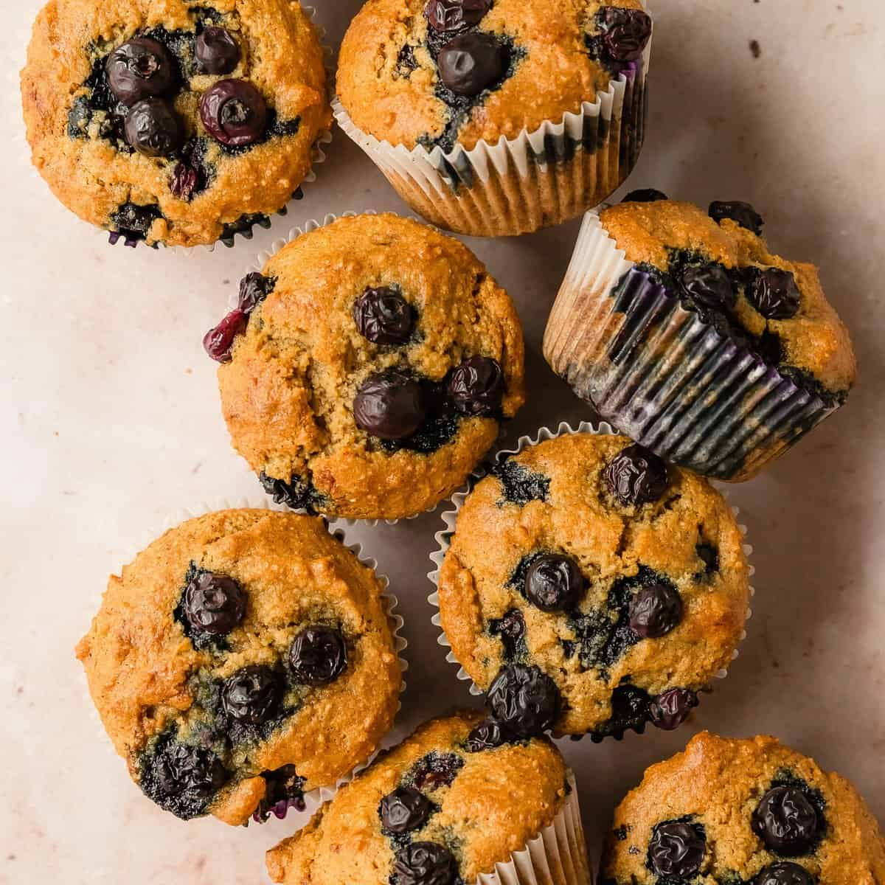

Super Muffins
Home

Description
These super muffins are delightfully nutty, high in protein, subtly sweet and the perfect companion to a cup of hot coffee.
Ingredients
2 cups almond flour
1/2 tsp baking soda
1/4 tsp sea salt
1/4 cup of melted oil or butter
1/4 cup maple syrup
1 tsp vanilla extract
1 tsp apple cider vinager
1/2 cup blueberries
Steps
- Preheat oven to 350 F.
- Combine almond flour, baking soda and salt.
- Mix oil into maple syrup, vinager and vanilla.
- Stir wet ingredients into dry ingredients until a batter forms.
- Add frozen blueberries and scoop muffins batter into a tin.
- Bake for 15 minutes turning muffin tin halfway through baking.
- Let cool for 10 minutes before serving.